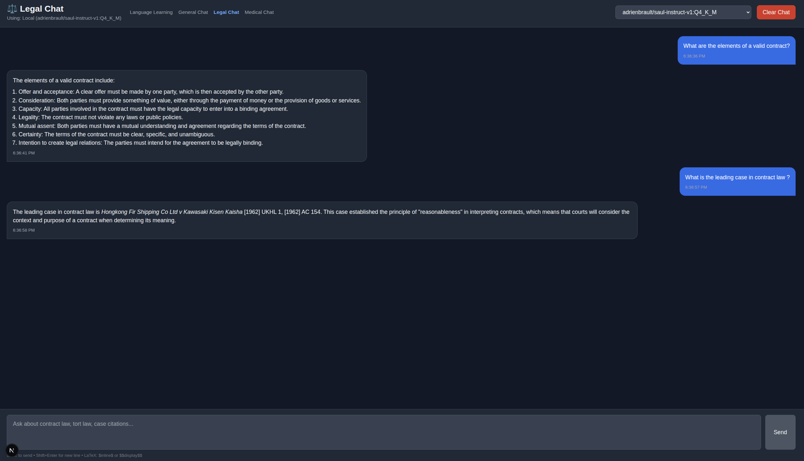
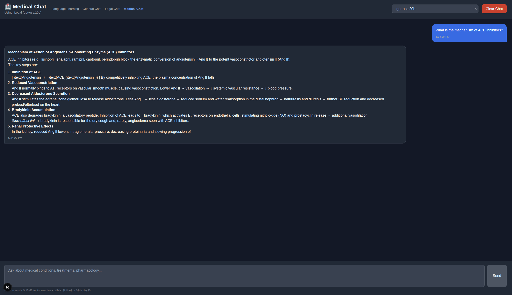
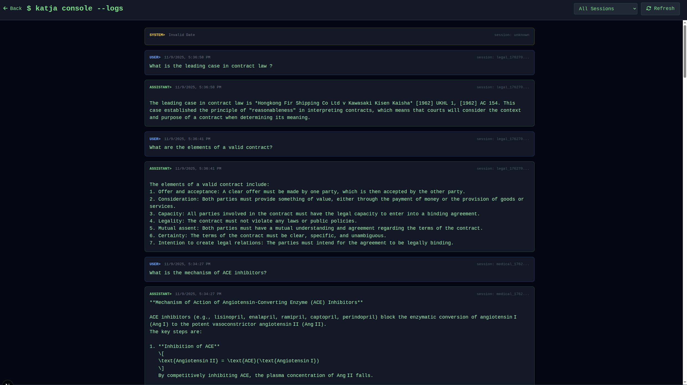

Katja v1.0.0 Documentation
Multi-Mode AI Chat Platform with Specialized LLMs
What is Katja?
Katja is a comprehensive AI chat platform featuring 5 specialized modes designed for different use cases. Built with a local-first philosophy, it uses Ollama for privacy-preserving AI inference, ensuring all data remains on your machine unless you opt for cloud fallback.
Why Katja?
- Privacy-First: Local inference via Ollama means your conversations never leave your machine
- Specialized Models: Purpose-built LLMs for legal reasoning, medical queries, and language learning
- Multi-Modal: 5 distinct chat modes optimized for different tasks
- Offline-Capable: Works without internet after initial model download
- Open Source: Fully transparent codebase with no telemetry
- Flexible: Choose between local privacy or cloud performance
Core Capabilities
Language Learning
- 7 European languages
- Real-time grammar correction
- Spaced repetition (SM-2)
- Export corrections
General Chat
- 14+ LLM models
- LaTeX rendering
- Model switching
- Structured responses
Legal Chat
- Saul-7B specialized model
- English law focus
- Legal citations
- Case law analysis
Medical Chat
- Meditron & BioMistral
- Maritime medical focus
- Examination guidance
- IMGS protocol support
Console
- Multi-session monitoring
- Real-time updates (3s)
- Session filtering
- Model tracking
Customization
- Editable system prompts
- Model selection
- Settings persistence
- CORS configuration
Features Overview
5 Specialized Chat Modes
| Mode | Models | Use Case | Key Features |
|---|---|---|---|
| Language Learning | Llama3, Qwen2, GLM4 | Practice 7 European languages | Grammar correction, spaced repetition, export corrections |
| General Chat | 14+ models, GPT-4o-mini | Technical discussions, research | LaTeX rendering, model switching, structured responses |
| Legal Chat | Saul-7B | English law queries | Legal citations, case law, doctrine explanations |
| Medical Chat | Meditron, BioMistral | Maritime medical guidance | Examination protocols, IMGS compliance, telemedicine prep |
| Console | All | Monitoring & debugging | Multi-session view, auto-refresh, session filtering |
Supported Languages
Language Learning mode supports 7 European languages:
- 🇸🇮 Slovene
- 🇩🇪 German
- 🇮🇹 Italian
- 🇭🇷 Croatian
- 🇫🇷 French
- 🇬🇧 English
- 🇵🇹 Portuguese
Privacy & Security
- Local-First Inference: All LLM processing via Ollama by default
- No Cloud Required: Works offline after model download
- No Telemetry: Zero data collection or tracking
- Session Isolation: Each browser tab gets unique session ID
- CORS Security: Configurable allowed origins
- Optional Cloud: Explicit opt-in for OpenAI fallback
Installation & Setup
Prerequisites
- Ollama: Install from ollama.ai
- Node.js 18+: For frontend
- Python 3.10+: For backend
- Git: To clone repository
- OpenAI API Key (Optional): For cloud fallback
Pull Recommended Models
# General-purpose chat
ollama pull llama3:8b-instruct-q4_K_M
# English law (Saul 7B)
ollama pull adrienbrault/saul-instruct-v1:Q4_K_M
# Medical (Meditron)
ollama pull meditron-7b
# Biomedical (BioMistral)
ollama pull biomistral-7b
# Multi-lingual options
ollama pull qwen2:7b
ollama pull glm4Quick Start (Linux)
git clone https://github.com/SL-Mar/Katja.git
cd Katja
chmod +x launch-katja.sh
./launch-katja.shThis launches all services:
- Language Learning: http://localhost:3000
- General Chat: http://localhost:3000/chat
- Legal Chat: http://localhost:3000/legal-chat
- Medical Chat: http://localhost:3000/medical-chat
- Console: http://localhost:3000/console
- Settings: http://localhost:3000/settings
- API Docs: http://localhost:8000/docs
Manual Setup
Backend Setup
cd backend
python3 -m venv venv
source venv/bin/activate # On Windows: venv\Scripts\activate
pip install -r requirements.txt
# Configure environment
cp .env.example .env
# Edit .env with your settings
# Start backend
uvicorn main:app --reload --host 0.0.0.0 --port 8000Frontend Setup
cd frontend
npm install
npm run devEnvironment Configuration
Edit backend/.env file:
# LLM Provider (local = Ollama, openai = fallback)
LLM_PROVIDER=local
# Ollama settings
OLLAMA_MODEL=llama3:8b-instruct-q4_K_M
OLLAMA_BASE_URL=http://localhost:11434
# Optional: OpenAI fallback
# OPENAI_API_KEY=your_api_key_here
# CORS origins (comma-separated)
ALLOWED_ORIGINS=http://localhost:3000,http://localhost:3001,http://localhost:5173System Architecture
High-Level Overview
┌─────────────┐ ┌──────────────┐ ┌─────────────┐
│ Next.js │─────▶│ FastAPI │─────▶│ Ollama │
│ Frontend │◀─────│ Backend │◀─────│ (Local) │
│ (Port 3000) │ │ (Port 8000) │ │ (Port 11434)│
└─────────────┘ └──────────────┘ └─────────────┘
│
▼
┌──────────────┐
│ SQLite │
│ Database │
└──────────────┘LLM Inference Flow
- User Message: Frontend sends message to
/katja/chat - Backend Receives: Loads conversation history from SQLite
- Prompt Construction: Builds system prompt + context
- Ollama Inference: Sends to local Ollama instance
- JSON Parsing: Extracts structured response (reply + grammar correction)
- Database Storage: Saves conversation to SQLite
- Response: Returns to frontend
JSON Response Format
Enforced via Ollama's format: json parameter:
{
"reply": "Conversational response in target language",
"correction": {
"corrected": "Corrected version of user's text",
"explanation": "Grammar explanation",
"pattern": "Grammar pattern ID (if applicable)",
"severity": "minor|major|critical"
}
}Architecture Components
Frontend Layer (Next.js)
- React 18: Component-based UI
- TypeScript: Type-safe development
- Tailwind CSS: Utility-first styling
- react-markdown + KaTeX: LaTeX rendering
- FontAwesome: Icon library
Backend Layer (FastAPI)
- FastAPI: Async Python web framework
- Pydantic v2: Data validation
- SQLite + WAL: Database with Write-Ahead Logging
- SlowAPI: Rate limiting
LLM Layer (Ollama)
- Local Inference: Privacy-preserving AI
- 14+ Models: Llama3, Qwen2, GLM4, Gemma2, etc.
- Specialized Models: Saul-7B (legal), Meditron (medical), BioMistral (biomedical)
- Cloud Fallback: Optional OpenAI GPT-4o-mini
Data Layer
- SQLite Database: Persistent storage
- WAL Mode: Write-Ahead Logging for concurrency
- Session Isolation: Unique session IDs per browser tab
- Auto-Initialization: Tables created on first run
Technology Stack
Frontend Technologies
| Technology | Version | Purpose |
|---|---|---|
| Next.js | 13+ | React framework with routing |
| React | 18 | UI component library |
| TypeScript | 5 | Type-safe JavaScript |
| Tailwind CSS | 3 | Utility-first CSS framework |
| react-markdown | Latest | Markdown rendering |
| KaTeX | Latest | LaTeX math rendering |
| FontAwesome | 6 | Icon library |
Backend Technologies
| Technology | Version | Purpose |
|---|---|---|
| FastAPI | 0.104+ | High-performance async API |
| Python | 3.10+ | Backend programming language |
| SQLite | 3 | Embedded database |
| Pydantic | 2.0 | Data validation |
| SlowAPI | Latest | Rate limiting |
LLM Models
| Model | Size | Specialty |
|---|---|---|
| llama3:8b-instruct-q4_K_M | 4.9GB | General-purpose |
| adrienbrault/saul-instruct-v1:Q4_K_M | 4.1GB | English law |
| meditron-7b | 4.1GB | Maritime medical |
| biomistral-7b | 4.1GB | Biomedical |
| qwen2:7b | 4.4GB | Multi-lingual |
| glm4 | 9.4GB | Multi-lingual |
| gemma2:9b | 5.4GB | General-purpose |
Configuration Parameters
| Parameter | Value | Purpose |
|---|---|---|
| Response Length | 4096 tokens | Maximum response size |
| Temperature | 0.0 | Deterministic (medical/legal accuracy) |
| JSON Format | Enforced | Structured responses |
| WAL Mode | Enabled | Better database concurrency |
Language Learning Mode
Overview
Language Learning mode provides real-time grammar correction and conversational practice in 7 European languages. Designed as an immersive learning tool with instant feedback.
Key Features
- 7 Languages: Slovene, German, Italian, Croatian, French, English, Portuguese
- Real-Time Grammar Correction: Instant feedback with explanations in target language
- Spaced Repetition: SM-2 algorithm for reviewing grammar patterns
- Export Corrections: Save corrections as JSON for external tools
- Auto-Clear on Switch: Fresh conversation when changing languages
- Severity Levels: Minor, Major, Critical grammar issues
How It Works
- Select target language via flag buttons
- Type message in target language
- Receive conversational response
- Get grammar correction with explanation (if applicable)
- Review corrections using spaced repetition
Grammar Correction Format
{
"corrected": "Corrected version of text",
"explanation": "Why the correction was needed",
"pattern": "grammar_pattern_123",
"severity": "major"
}Spaced Repetition (SM-2 Algorithm)
Grammar corrections are automatically added to a spaced repetition queue using the SuperMemo-2 algorithm:
- Initial Interval: 1 day
- Easy Factor: 2.5 (adjusts based on performance)
- Review Outcomes: Easy, Good, Hard, Again
- Adaptive Scheduling: Intervals increase with successful reviews
Supported Languages Details
| Language | Code | Grammar Patterns |
|---|---|---|
| 🇸🇮 Slovene | slovene | Dual form, case system, verbal aspects |
| 🇩🇪 German | german | Cases, verb positions, gender articles |
| 🇮🇹 Italian | italian | Verb conjugations, articles, prepositions |
| 🇭🇷 Croatian | croatian | Case system, verb aspects, Ijekavian/Ekavian |
| 🇫🇷 French | french | Articles, liaisons, subjunctive mood |
| 🇬🇧 English | english | Tenses, prepositions, articles |
| 🇵🇹 Portuguese | portuguese | Verb conjugations, gender agreement |
General Chat Mode
Overview
General Chat mode provides flexible AI conversations with 14+ LLM models and support for technical discussions, including LaTeX math rendering.
Key Features
- 14+ Models: Choose from Llama, Qwen, GLM4, Gemma, and more
- LaTeX Rendering: Inline
$...$or display$$...$$math formulas - Model Switching: Live dropdown selector
- Structured Responses: Optimized system prompts for technical queries
- GPT-4o-mini Support: Optional OpenAI cloud fallback
- Session Memory: Conversation context maintained
LaTeX Math Support
Rendered using KaTeX for beautiful mathematical typesetting:
Inline Math
The quadratic formula is $x = \frac{-b \pm \sqrt{b^2 - 4ac}}{2a}$Display Math
$$
\int_0^\infty e^{-x^2} dx = \frac{\sqrt{\pi}}{2}
$$Example Queries
- "What is Bayes' theorem and how is it used in statistics?"
- "Explain quantum entanglement in simple terms"
- "Write a Python function to calculate Fibonacci numbers"
- "Derive the Navier-Stokes equations"
Available Models
All Ollama models installed on your system are automatically detected and available in the dropdown:
- llama3:8b-instruct-q4_K_M
- qwen2:7b
- glm4
- gemma2:9b
- mistral:7b
- And any other models you pull
Legal Chat Mode
Overview
Legal Chat mode uses the specialized Saul-7B model fine-tuned for English law, contracts, torts, and legal reasoning.
Key Features
- Saul-7B Model: Fine-tuned for English common law
- Legal Citations: Properly formatted case references
- Precedent Explanations: Detailed case law analysis
- Legal Doctrine: Equity, trusts, negligence, contract law
- LaTeX Support: Formatted legal citations and principles
Legal Domains Covered
- Contract Law: Formation, consideration, breach, remedies
- Tort Law: Negligence, duty of care, causation
- Equity: Trusts, equitable remedies, fiduciary duties
- Insurance Law: Good faith, utmost good faith doctrine
- Case Law: Precedent analysis and legal reasoning
Example Queries
- "What is the leading case in negligence?" → Donoghue v Stevenson [1932]
- "Explain the doctrine of consideration in contract law"
- "Is there an obligation of good faith in insurance law?"
- "What are the elements of a valid trust?"
Saul-7B Model Details
| Property | Value |
|---|---|
| Model Name | adrienbrault/saul-instruct-v1:Q4_K_M |
| Size | 4.1GB (quantized) |
| Specialty | English common law |
| Fine-Tuned On | Legal texts, case law, doctrines |
| Temperature | 0.0 (deterministic for accuracy) |
Maritime Medical Chat Mode
Overview
Maritime Medical Chat mode is designed for ship's officers managing medical care on vessels without doctors, using Meditron and BioMistral models.
- NO DIAGNOSIS OR TREATMENT: Ship's medical officers are NOT authorized to diagnose or treat (except immediate life-saving measures)
- PHYSICIAN AUTHORIZATION REQUIRED: All interventions beyond basic first aid must be authorized by shore-based physician
- EXAMINATION ONLY: This tool focuses on gathering accurate information for remote physicians
Key Features
- Meditron & BioMistral: Medical-domain fine-tuned models
- Maritime Focus: Ship's officer medical care guidance
- Examination Protocols: Systematic patient assessment
- Telemedicine Prep: Organize observations for physician consultations
- IMGS Protocol: International Medical Guide for Ships compliance
- No Diagnosis/Treatment: Emphasizes observation and communication
Examination Guidance
The system guides ship's officers through systematic patient examination:
1. Vital Signs
- Blood pressure
- Heart rate
- Respiratory rate
- Temperature
- Oxygen saturation (if available)
2. SAMPLE History
- Signs and symptoms
- Allergies
- Medications
- Past medical history
- Last oral intake
- Events leading to illness/injury
3. Physical Examination
- General appearance
- Head-to-toe examination
- Neurological status
- Specific area of concern
Example Queries
- "How should I perform a complete physical examination on a crew member with chest pain?"
- "What vital signs should I collect for the ship's doctor consultation?"
- "Guide me through assessing a patient's neurological status"
- "What observations should I document for a suspected appendicitis case?"
IMGS Compliance
Follows protocols from the International Medical Guide for Ships (WHO publication):
- Standardized examination procedures
- Telemedicine consultation preparation
- Medical record documentation
- Shore-based physician communication
Model Details
| Model | Size | Specialty |
|---|---|---|
| meditron-7b | 4.1GB | Maritime medical guidance |
| biomistral-7b | 4.1GB | Biomedical terminology |
Console Mode
Overview
Console mode provides a terminal-style monitoring interface for all LLM interactions across all chat modes.
Key Features
- Terminal Aesthetic: Hacker-style green monospace text
- Multi-Session Monitoring: View all conversations in one place
- Real-Time Updates: Auto-refresh every 3 seconds
- Session Filtering: Filter by language, general, legal, medical
- Model Tracking: See which model was used for each response
- Timestamp Tracking: Full conversation history with precise timestamps
Console Display Format
[2025-11-10 17:30:15] [language] [llama3:8b-instruct-q4_K_M]
USER: Zdravo, kako si?
ASSISTANT: Jaz sem dobro, hvala! Kako si ti?
CORRECTION: None
[2025-11-10 17:31:22] [general] [qwen2:7b]
USER: Explain quantum entanglement
ASSISTANT: Quantum entanglement is a phenomenon where...
[2025-11-10 17:32:45] [legal] [saul-instruct-v1]
USER: What is the leading case in negligence?
ASSISTANT: The leading case is Donoghue v Stevenson [1932] AC 562...Filtering Options
- All: Show all conversations
- Language Learning: Only language practice sessions
- General Chat: General-purpose conversations
- Legal Chat: Legal queries
- Medical Chat: Medical consultations
Use Cases
- Debugging: Track which models are being used
- Analysis: Review conversation patterns
- Export: Copy logs for external analysis
- Monitoring: Watch real-time LLM responses
LLM Routing
Overview
Katja's LLM routing system intelligently selects between local Ollama models and cloud OpenAI fallback based on availability and configuration.
Routing Logic
1. Check LLM_PROVIDER in .env
├─ "local" → Use Ollama
└─ "openai" → Use OpenAI API
2. If Ollama selected:
├─ Check if Ollama is running (http://localhost:11434)
├─ If available → Use selected Ollama model
└─ If unavailable AND OPENAI_API_KEY set → Fallback to GPT-4o-mini
3. If OpenAI selected:
└─ Use GPT-4o-mini directlyModel Selection Priority
- User Selection: Model selected in UI dropdown (highest priority)
- Environment Variable:
OLLAMA_MODELin.env - Default Model:
llama3:8b-instruct-q4_K_M - Cloud Fallback:
gpt-4o-mini(if configured)
Automatic Fallback
If local Ollama is unavailable and OpenAI API key is configured:
try:
response = ollama_client.chat(model=selected_model, ...)
except Exception as e:
if OPENAI_API_KEY:
logger.warning("Ollama unavailable, falling back to GPT-4o-mini")
response = openai_client.chat(model="gpt-4o-mini", ...)
else:
raise Exception("Ollama unavailable and no OpenAI fallback configured")Model Discovery
Available models are automatically discovered from Ollama:
GET http://localhost:11434/api/tags
Response:
{
"models": [
{"name": "llama3:8b-instruct-q4_K_M"},
{"name": "qwen2:7b"},
{"name": "saul-instruct-v1:Q4_K_M"},
...
]
}ollama pull.
Grammar Correction System
Overview
The grammar correction system analyzes user input in the target language and provides detailed feedback with explanations.
Correction Process
- Input Analysis: User message parsed by LLM
- Error Detection: Grammar, syntax, spelling issues identified
- Severity Assignment: Minor, Major, or Critical
- Correction Generation: Corrected version created
- Explanation: Why the correction was needed (in target language)
- Pattern Matching: Link to grammar pattern database (if applicable)
Severity Levels
| Severity | Description | Example |
|---|---|---|
| Minor | Small typo or informal usage | Missing accent mark, capitalization |
| Major | Grammar mistake affecting clarity | Wrong verb tense, incorrect case |
| Critical | Fundamental error changing meaning | Wrong gender, completely incorrect structure |
Grammar Pattern Database
Pre-seeded with common grammar patterns for each language:
# German example
{
"pattern_id": "de_case_accusative",
"language": "german",
"category": "cases",
"rule": "Accusative case after verbs of motion with direction",
"example": "Ich gehe in den Park (not in der Park)",
"difficulty": "intermediate"
}Correction JSON Schema
{
"corrected": "Corrected version of the text",
"explanation": "Detailed explanation in target language",
"pattern": "grammar_pattern_id or null",
"severity": "minor | major | critical"
}Spaced Repetition System
Overview
Katja implements the SuperMemo-2 (SM-2) algorithm for optimally scheduling grammar correction reviews.
SM-2 Algorithm
The algorithm adjusts review intervals based on your performance:
Parameters
- EF (Easiness Factor): Starts at 2.5
- Interval: Days until next review
- Repetitions: Number of successful reviews
Review Outcomes
| Outcome | Quality | Effect |
|---|---|---|
| Again | 0 | Reset interval to 1 day |
| Hard | 3 | Slightly increase interval, reduce EF |
| Good | 4 | Normal interval increase |
| Easy | 5 | Large interval increase, increase EF |
Interval Calculation
if quality < 3:
# Failed - reset
interval = 1
repetitions = 0
else:
if repetitions == 0:
interval = 1
elif repetitions == 1:
interval = 6
else:
interval = previous_interval * EF
# Update EF
EF = EF + (0.1 - (5 - quality) * (0.08 + (5 - quality) * 0.02))
if EF < 1.3:
EF = 1.3
repetitions += 1Review Workflow
- Navigate to Reviews page (
/reviews) - View corrections due for review
- For each correction:
- See original text
- Recall correct version
- Rate difficulty: Again, Hard, Good, Easy
- Next review scheduled automatically
Session Management
Overview
Katja uses unique session IDs to isolate conversations across different browser tabs and chat modes.
Session ID Generation
// Frontend (localStorage)
const sessionId = localStorage.getItem('sessionId') || generateUUID();
localStorage.setItem('sessionId', sessionId);Session Isolation
- Per Browser Tab: Each tab gets unique session ID
- Persistent: Survives page refreshes
- Mode-Specific: Language learning vs general chat have separate histories
- Database Storage: All sessions stored in SQLite
Conversation Context
Each API call includes session history for context-aware responses:
POST /katja/chat
{
"session_id": "550e8400-e29b-41d4-a716-446655440000",
"language": "german",
"text": "Wie geht es dir?"
}
Backend loads history:
SELECT * FROM conversation_history
WHERE session_id = ?
ORDER BY timestamp DESC
LIMIT 10Clearing Sessions
Each mode has a clear button to reset conversation:
DELETE /katja/clear?session_id={sessionId}
# Deletes all conversation history for this sessionAPI Reference Overview
Base URL
http://localhost:8000Authentication
No authentication required for local development. CORS origins configured in .env file.
Response Format
All responses are JSON:
{
"reply": "Assistant response",
"correction": {
"corrected": "Corrected text",
"explanation": "Explanation",
"pattern": "pattern_id",
"severity": "major"
}
}Error Handling
{
"detail": "Error message",
"type": "error_type"
}Common HTTP Status Codes
| Code | Meaning |
|---|---|
| 200 | OK - Request successful |
| 400 | Bad Request - Invalid input |
| 500 | Internal Server Error - LLM or database error |
| 503 | Service Unavailable - Ollama not running |
Rate Limiting
Implemented via SlowAPI:
- Default: 60 requests per minute per IP
- Configurable: Adjust in backend code
Chat API
Language learning chat with grammar correction
Source: backend/routers/teacher.py
# Request
{
"session_id": "550e8400-e29b-41d4-a716-446655440000",
"language": "german",
"text": "Ich gehe in der Park"
}
# Response
{
"reply": "In den Park! Du meinst 'Ich gehe in den Park'.",
"correction": {
"corrected": "Ich gehe in den Park",
"explanation": "Nach 'in' mit Bewegungsrichtung steht der Akkusativ",
"pattern": "de_case_accusative",
"severity": "major"
}
}General/Legal/Medical chat
Source: backend/routers/teacher.py
# Request
{
"session_id": "550e8400-e29b-41d4-a716-446655440000",
"text": "What is the quadratic formula?",
"model": "llama3:8b-instruct-q4_K_M"
}
# Response
{
"reply": "The quadratic formula is $x = \\frac{-b \\pm \\sqrt{b^2 - 4ac}}{2a}$"
}Clear language learning conversation history
DELETE /katja/clear?session_id=550e8400-e29b-41d4-a716-446655440000
Response: { "status": "cleared" }Clear generic chat history
DELETE /katja/generic-chat/clear?session_id=550e8400-e29b-41d4-a716-446655440000
Response: { "status": "cleared" }Models API
List all available Ollama models
Source: backend/routers/system.py
# Response
{
"models": [
"llama3:8b-instruct-q4_K_M",
"qwen2:7b",
"glm4",
"saul-instruct-v1:Q4_K_M",
"meditron-7b",
"biomistral-7b"
]
}List models with metadata
# Response
{
"models": [
{
"name": "llama3:8b-instruct-q4_K_M",
"size": "4.9GB",
"modified": "2025-10-15T10:30:00Z"
}
]
}Switch active model
# Request
{
"model": "qwen2:7b"
}
# Response
{
"status": "model_selected",
"model": "qwen2:7b"
}Console API
Get conversation history for console
Source: backend/routers/system.py
# Query Parameters
?type=language # language | general | all
?limit=100
# Response
{
"history": [
{
"timestamp": "2025-11-10T17:30:15Z",
"type": "language",
"model": "llama3:8b-instruct-q4_K_M",
"user_message": "Zdravo",
"assistant_reply": "Živjo! Kako si?",
"correction": null
}
]
}Stream backend logs (real-time)
GET /katja/system/logs
# Streaming response (Server-Sent Events)
data: [2025-11-10 17:30:15] INFO: Chat request received
data: [2025-11-10 17:30:16] INFO: Using model llama3:8b-instruct-q4_K_M
data: [2025-11-10 17:30:18] INFO: Response generated successfullyDatabase Schema
Overview
Katja uses SQLite with WAL (Write-Ahead Logging) mode for better concurrency. Database auto-initializes on first startup.
Tables
user_profile
CREATE TABLE user_profile (
id INTEGER PRIMARY KEY AUTOINCREMENT,
session_id TEXT UNIQUE NOT NULL,
current_language TEXT DEFAULT 'english',
created_at TIMESTAMP DEFAULT CURRENT_TIMESTAMP,
total_corrections INTEGER DEFAULT 0,
total_conversations INTEGER DEFAULT 0
);conversation_history
CREATE TABLE conversation_history (
id INTEGER PRIMARY KEY AUTOINCREMENT,
session_id TEXT NOT NULL,
language TEXT NOT NULL,
user_message TEXT NOT NULL,
assistant_reply TEXT NOT NULL,
original_text TEXT,
corrected_text TEXT,
timestamp TIMESTAMP DEFAULT CURRENT_TIMESTAMP,
FOREIGN KEY (session_id) REFERENCES user_profile(session_id)
);grammar_corrections
CREATE TABLE grammar_corrections (
id INTEGER PRIMARY KEY AUTOINCREMENT,
session_id TEXT NOT NULL,
language TEXT NOT NULL,
original TEXT NOT NULL,
corrected TEXT NOT NULL,
explanation TEXT,
pattern_id TEXT,
severity TEXT,
next_review_date DATE,
easiness_factor REAL DEFAULT 2.5,
interval INTEGER DEFAULT 0,
repetitions INTEGER DEFAULT 0,
created_at TIMESTAMP DEFAULT CURRENT_TIMESTAMP,
FOREIGN KEY (session_id) REFERENCES user_profile(session_id),
FOREIGN KEY (pattern_id) REFERENCES grammar_patterns(pattern_id)
);grammar_patterns
CREATE TABLE grammar_patterns (
pattern_id TEXT PRIMARY KEY,
language TEXT NOT NULL,
category TEXT,
rule TEXT NOT NULL,
example TEXT,
difficulty TEXT,
created_at TIMESTAMP DEFAULT CURRENT_TIMESTAMP
);generic_conversations
CREATE TABLE generic_conversations (
id INTEGER PRIMARY KEY AUTOINCREMENT,
session_id TEXT NOT NULL,
role TEXT NOT NULL, -- 'user' or 'assistant'
content TEXT NOT NULL,
model_used TEXT,
timestamp TIMESTAMP DEFAULT CURRENT_TIMESTAMP
);Indexes
CREATE INDEX idx_corrections_session ON grammar_corrections(session_id);
CREATE INDEX idx_corrections_review ON grammar_corrections(next_review_date);
CREATE INDEX idx_conversations_session ON conversation_history(session_id);
CREATE INDEX idx_generic_session ON generic_conversations(session_id);WAL Mode
Enabled for better concurrency (multiple reads during writes):
PRAGMA journal_mode = WAL;backend/data/katja.db (auto-created, not tracked in git)
Model Selection Guide
Recommended Models by Use Case
Language Learning
| Model | Size | Best For |
|---|---|---|
| llama3:8b-instruct-q4_K_M | 4.9GB | European languages, grammar accuracy |
| qwen2:7b | 4.4GB | Multi-lingual, Asian languages |
| glm4 | 9.4GB | Best multi-lingual support |
General Chat
| Model | Size | Best For |
|---|---|---|
| llama3:8b-instruct-q4_K_M | 4.9GB | General knowledge, coding |
| gemma2:9b | 5.4GB | Technical discussions |
| qwen2:7b | 4.4GB | Math, science |
Legal Chat
| Model | Size | Best For |
|---|---|---|
| adrienbrault/saul-instruct-v1:Q4_K_M | 4.1GB | REQUIRED - English law specialist |
Medical Chat
| Model | Size | Best For |
|---|---|---|
| meditron-7b | 4.1GB | Maritime medical guidance |
| biomistral-7b | 4.1GB | Biomedical terminology |
Model Installation
# Pull specific model
ollama pull llama3:8b-instruct-q4_K_M
# List installed models
ollama list
# Remove model
ollama rm model-nameModel Performance
Approximate inference speed on typical hardware (16GB RAM, CPU only):
- 4GB models: ~20-30 tokens/sec
- 7GB models: ~15-25 tokens/sec
- 9GB models: ~10-20 tokens/sec
Customization & Configuration
System Prompt Customization
Navigate to Settings page (/settings) to customize system prompts for each mode:
Features
- Live Editor: Monaco-style textarea for editing
- Browser Storage: Changes saved to localStorage
- Reset to Defaults: Restore original prompts
- Preview: See formatted prompt before saving
- Instant Effect: Changes apply on next message
Customization Tips
- Adjust tone (formal/casual)
- Add domain-specific knowledge
- Change output format preferences
- Include LaTeX notation guidance
Environment Variables
Configurable in backend/.env:
# LLM Provider
LLM_PROVIDER=local # local | openai
# Ollama Configuration
OLLAMA_MODEL=llama3:8b-instruct-q4_K_M
OLLAMA_BASE_URL=http://localhost:11434
OLLAMA_TIMEOUT=300 # seconds
# OpenAI Fallback (optional)
OPENAI_API_KEY=sk-...
OPENAI_MODEL=gpt-4o-mini
# CORS
ALLOWED_ORIGINS=http://localhost:3000,http://localhost:3001
# Database
DATABASE_PATH=./data/katja.db
# Logging
LOG_LEVEL=INFO # DEBUG | INFO | WARNING | ERRORFrontend Configuration
Edit frontend/config/systemPrompts.ts for default prompts:
export const DEFAULT_PROMPTS = {
languageLearning: "You are a friendly language teacher...",
general: "You are a helpful AI assistant...",
legal: "You are a legal expert specializing in English common law...",
medical: "You are a maritime medical advisor..."
};Port Configuration
# Frontend (package.json)
"scripts": {
"dev": "next dev -p 3000"
}
# Backend (uvicorn command)
uvicorn main:app --host 0.0.0.0 --port 8000 --reload